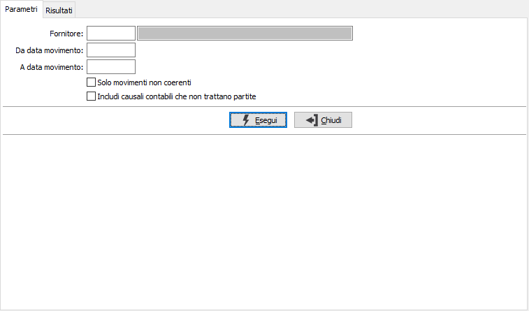
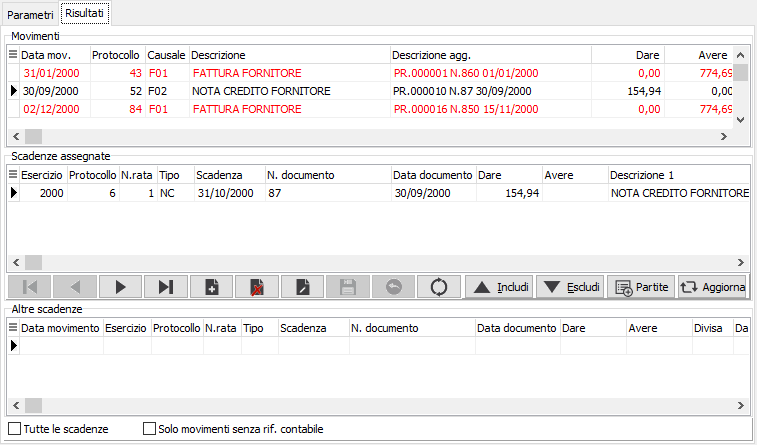
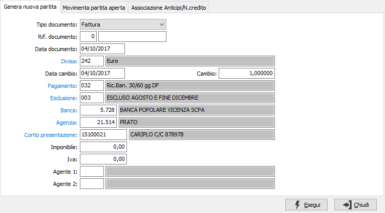
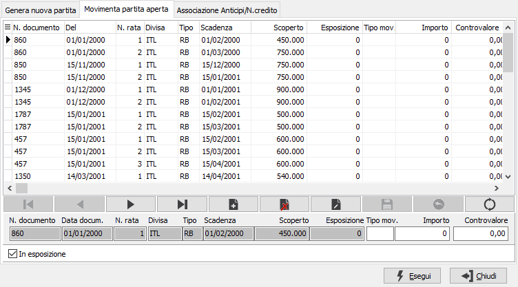
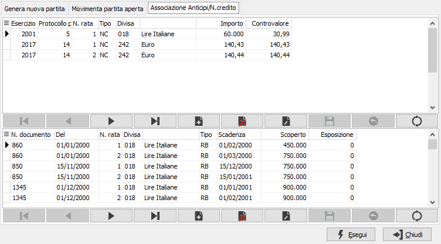

Riallineamento contabilità - scadenze
La procedura analizza i movimenti contabili che movimentano partite di un determinato fornitore e consente di effettuare varie operazioni per riallineare eventuali incoerenze presente sui dati.
Attenzione: le operazioni di assegnazione effettuate dall'interno di questa procedura sono IMMEDIATAMENTE REGISTRATE nelle relative tabelle; di conseguenza l'utilizzo si raccomanda a personale qualificato che abbia sufficiente conoscenza delle relazioni tra contabilità e scadenze.

La selezione del fornitore è obbligatoria, è poi possibile specificare un periodo per la lettura dei movimenti contabili; le due caselle di spunta possono essere utilizzate per limitare la selezione ai soli movimenti contabili incoerenti ed includere i movimenti che sono stati registrati con una causale contabile non collegata alle partite aperte. La pressione sul pulsante Esegui avvia l'elaborazione e visualizza i dati su cui è possibile operare nella pagina Risultati.

La pagina contiene tre sezioni diverse, così riassunte:
Movimenti: contiene i movimenti contabili selezionati in base ai parametri spiegati precedentemente;
Scadenza assegnate: contiene le scadenze collegate al movimento contabile selezionato, che è quello contrassegnato dalla freccia posta a sinistra nella griglia di visualizzazione della sezione superiore;
Altre scadenze: contiene tutte le altre scadenze, nella stessa data del movimento contabile, che non sono collegate al movimento contabile selezionato, che è quello contrassegnato dalla freccia posta a sinistra nella griglia di visualizzazione della prima sezione. In questa sezione sono presenti due filtri: uno per visualizzare comunque tutte le scadenze anche relative ad altre date, l'altro per visualizzare solo le scadenze che non hanno un collegamento ad un movimento contabile.
Da questa pagina è possibile effettuare una serie di operazioni:
Sistemare eventuali quadrature fra movimento contabile e scadenze tramite i bottoni "Includi" ed "Escludi" che consentono di associare un rigo scadenze associato ad un altro movimento contabile (o a nessun movimento contabile) o di deassociare un movimento contabile erroneamente associato. Il bottone Includi aggiunge alla sezione scadenze assegnate il rigo di Altre scadenze su cui si è posizionati; il bottone Escludi togli dalla sezione scadenze assegnate il rigo su cui si è posizionati rimuovendo di fatto l'associazione al movimento contabile.
Aggiornare la visualizzazione della prima sezione; ad esempio se era stato richiesto di visualizzare solo i movimenti non coerenti, uno è stato corretto se premo il pulsante il movimento viene tolto dalla prima sezione.
Utilizzare il bottone Partite dove è possibile effettuare tre operazioni distinte:

Creare una nuova partita a fronte di un movimento contabile, quello su cui si è posizionati al momento della pressione del tasto Partite, che ne è sprovvisto (questo può servire quando la causale contabile genera partita ma non è stata creata la partita): i dati vengono già proposti ed è necessario solo completarli con gli importi ed i relativi agenti.

Creare righe di tipo accredito/insoluto per chiudere una partita abbinando le righe create ad un movimento contabile, quello su cui si è posizionati al momento della pressione del tasto Partite: è sufficiente inserire il tipo movimento e gli importi sulle righe per cui generare i nuovi dati.

Associare automaticamente più anticipi/note credito a più fatture in un unico passaggio: questa operazione non ha effetto sui dati visualizzati nella finestra principale, ma è soltanto una utility per compiere l'associazione note di credito in maniera massiva. E' necessario selezionare nella griglia superiore le note di credito/anticipi da associare e nella griglia inferiore le partite su cui effettuare l'associazione.